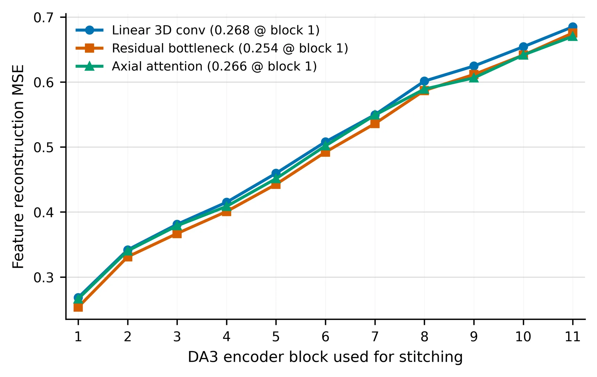
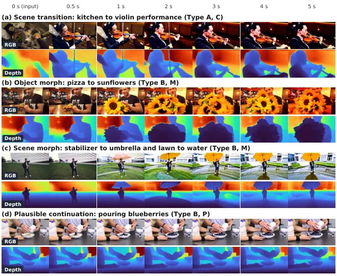
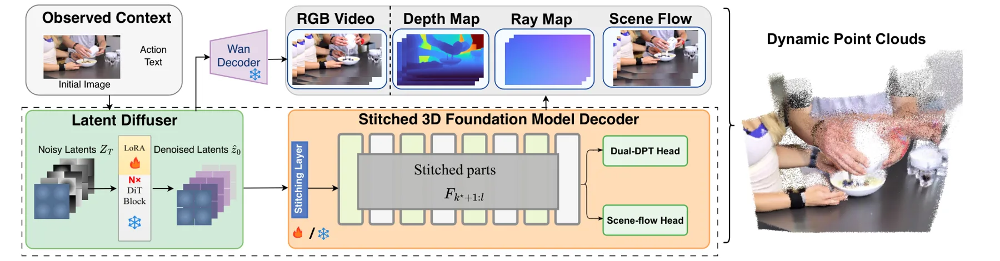
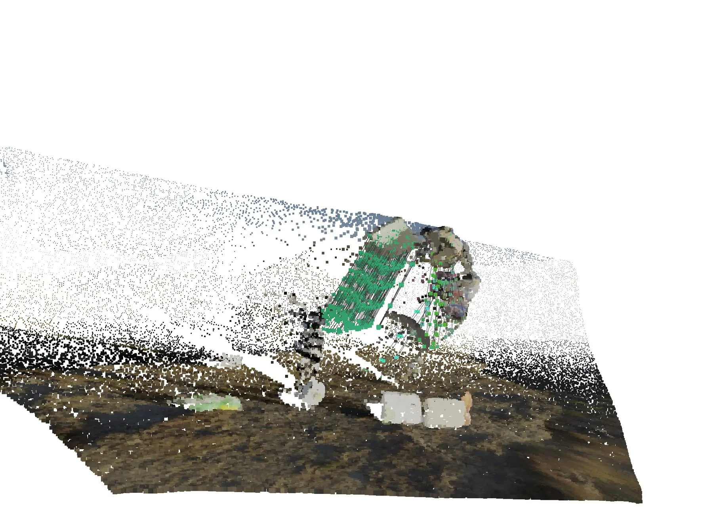
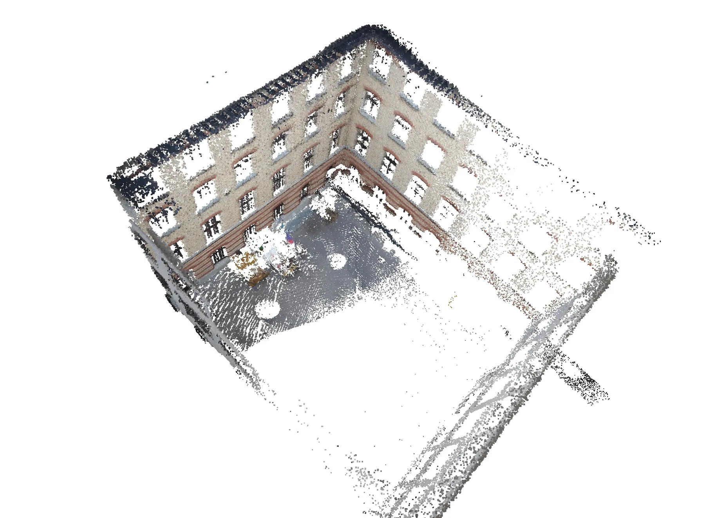

Plan4D：生成式可规划 4D 世界
Plan4D: Generative Plannable 4D Worlds
一句话：用冻结 DA3 当几何 critic、LongCat-Video 当生成先验，从同一条视频潜轨迹一次读出 RGB 与 4D 几何。
AbsRel
Chamfer-L1
RRA@5
作者、单位与技术谱系 · Research context
作者与单位
研究脉络
- Depth Anything 3方法基座关系：提供冻结的深度/相机/点云几何先验，Plan4D 在其上增加 scene-flow head 与 stitching 接口。[Plan4D 原文 §3.1]
- LongCat-Video / Wan 2.1 VAE方法基座关系：提供视频生成先验与潜空间，Plan4D 把其潜变量接到 DA3 decoder。[Plan4D 原文 §3]
- VIST3A / Gen3R方法上游关系：模型缝合与几何-视频对齐的前作；Plan4D 把静态/场景级对齐推进到动作条件 4D 生成。[Plan4D 原文 §2]
合作网络
- AMAP × NTU 共同署名AMAP, Alibaba Group → PVG, Nanyang Technological University关系：共同署名[arXiv 摘要页]
- Plan4D → DA3 技术依赖Plan4D → Depth Anything 3关系：技术依赖[Plan4D 原文 §3.1]
- Plan4D → LongCat-Video 技术依赖Plan4D → LongCat-Video关系：技术依赖[Plan4D 原文 §3]
作者与单位来自论文首页；DA3/LongCat 的依赖关系来自方法章节的显式引用与加载说明；未发现公开的导师或师生关系证据，因此不补写。
方法本质拆解 · What actually changed
是不是微调？
不是单一模型端到端微调，而是三阶段训练：先在冻结 DA3 上训练新 scene-flow head，再训练 latent-to-geometry stitching 与 stitched decoder，最后冻结 decoder 只训练视频 DiT。被更新的权重分别是 flow head、stitching 模块/DA3 decoder 和 LongCat-Video DiT，DA3 主体与视频 VAE 保持冻结。
有没有额外约束？
有。几何侧同时施加深度、相机射线、相机位姿、场景流和时序正则，并叠加教师蒸馏；联合阶段对生成后缀施加几何损失、对条件前缀 mask。scene flow 还被约束在首帧相机基表达，避免相机运动把运动向量搅乱。
推理/后端到底做了什么？
推理没有额外优化或全局 BA：视频 DiT 生成一条潜轨迹，Wan VAE 解码 RGB，冻结的 stitched DA3 decoder 从同一潜状态直接读出深度、射线、点云和场景流。它不做逐场景拟合，也不需要在推理时跑独立的 3D 重建网络。
方法本质是什么？
本质是把「未来怎么动」交给视频生成先验、把「动完是什么几何」交给冻结的 3D 基础模型，再用一个可学习的浅层接口把两者对齐到同一潜空间。它改变的是生成模型缺少显式 4D 状态这一不确定性，靠共享潜轨迹和几何 critic 把外观与结构绑在一起。
输入是场景上下文与文本动作，经 Wan 潜空间生成未来轨迹，再由冻结 DA3 decoder 读出 4D 几何；改变的是生成模型缺少显式几何约束，靠 stitching 与几何 critic 把外观和结构锁在同一条潜轨迹上。

结论与问题Conclusion & Motivation
核心结论
Plan4D 把视频生成器 LongCat-Video 与几何重建器 Depth Anything 3（DA3）通过 latent-to-geometry stitching 接在同一个视频潜状态上，从场景上下文和文本动作一次前向同时读出未来 RGB、深度、相机射线、点云和场景流。它在 HoiGen 上把深度 AbsRel 从 TesserAct 的 1.850 降到 0.1125，把相机 RRA@5 从 0.9256 提到 0.9809；在 Epic-Kitchens-100 上把 Chamfer-L1 从 1.3321 降到 0.2321，RRA@5 达到 1.0000。作者把这条路线定位为「生成式可规划 4D 世界」的中间形态，而不是端到端具身智能体。
动机与问题
现有世界模型大多只生成 RGB，视觉上好看但缺乏物理落地和跨时间几何一致性；而 4D 重建模型只能从已观测帧推断运动，不能按动作生成未来。真正的瓶颈是数据：同时带动作文本、相机轨迹、稠密深度和场景流的大规模视频几乎不存在，Action-100M 有动作但无 3D 标注，动态 3D 数据集又太小。作者的选择是不再从零学一个 4D 世界模型，而是把预训练视频生成器和 3D 重建器的先验「缝合」起来，用无标注动作视频提供生成监督。
方法Method
方法总览
训练分三步。第一步在冻结 DA3 上增加一个 DPT 风格的 scene-flow head，用四个中间 token 图预测逐像素前向 3D 位移，并旋转到首帧相机基。第二步学习一个 3D 卷积 stitching 模块，把 Wan 2.1 VAE 潜变量映射进 DA3 的某个早期 encoder block，再用「教师蒸馏 + 真值几何」混合目标微调 stitched decoder。第三步冻结该 decoder，把它当作可微几何 critic，与视频扩散模型的 flow-matching 损失联合训练；推理时同一个潜轨迹分别经 VAE 和 stitched decoder 解码成视频与 4D 几何。
关键技术细节
scene-flow head 只读取冻结 encoder 的中间 token，原始深度与相机分支完全不动；预测先在当前相机基表达，再只做旋转变换到首帧基，因为场景流是向量而不是点。stitching 的注入层不是手选的：作者对若干早期 block 解一个带 L2 正则的线性拟合，取「从视频 VAE latent 最线性可达」的 block，并把它作为初始化。微调阶段同时用 GT 深度/射线/相机/运动/时序损失和教师输出蒸馏；联合训练时只对生成后缀施加几何损失，条件前缀被 mask 掉，保证一条潜轨迹同时满足外观与 4D 一致性。

实验Experiments
实验设置
Stage 1 在 PointOdyssey、Dynamic Replica、Virtual KITTI 2、BlinkVision、OmniWorld-Game 上训练 scene-flow head 20 epoch，用 16 张 H100；Stage 2 加 ScanNet++ 与 MVS-Synth，用 64 张 H20 跑一个混合 epoch；Stage 3 在 Action100M 子集上训练 DiT 一个 epoch，同样 64 张 H20。几何评测覆盖 MOVi-F、Dynamic Replica、PointOdyssey 的 81 帧片段，以及 ETH3D、ScanNet++、Dynamic-RE10K、RobbySimVal；联合生成评测用 RLBench 210 条、HOIGen 200 条、Dynamic Replica 480 条、PointOdyssey 375 条和 Epic-Kitchens-100 的 100 条 5 秒片段。指标包括 scene-flow EPE/APD0.05、深度 δ1/AbsRel、Chamfer-L1、相机 RRA@5/RPE-R 和 VBench 的 SC/Cap.Sim。
实验数字与比较
scene flow 上，stitched 变体在 MOVi-F 取得 EPE 13.10、APD0.05 93.32，优于 TraceAnything 的 13.27/91.69 和 MotionCrafter 的 13.48/90.86，且只用了 0.97M 训练帧（对手 1.67–1.98M）；RGB 输入的 DA3 变体在 Dynamic Replica 为 EPE 0.76、APD 99.23，明显好于 Any4D 的 3.06/85.85。stitched decoder 在 Dynamic Replica 的重建 F-score 为 0.6125，远高于 VIST3A 的 0.0740 和 Gen3R-VAE 的 0.0687；Dynamic-RE10K 相机 AUC30 为 0.5350，略高于 DA3 的 0.5333 和 VGGT 的 0.5149。联合生成上，HoiGen 的 AbsRel 0.1125 对 TesserAct 1.850、RRA@5 0.9809 对 0.9256；Epic-Kitchens-100 的 Chamfer-L1 0.2321 对 1.3321，RRA@5 1.0000 对 0.9736。
消融/失败边界
联合训练目标消融给出清晰取舍：只保留 RGB 损失时 HoiGen 的 SC 为 0.8889、AbsRel 0.1559、RPE-R 0.4010；只保留几何损失时 AbsRel 降到 0.0745，但 SC 崩到 0.6198；完整目标为 SC 0.9035、AbsRel 0.1125、RPE-R 0.1240。Dynamic Replica 上几何单目标的 AbsRel 反而是 0.1733，远差于完整模型的 0.0696，说明缺少视频先验时几何监督会被数据覆盖度拖偏。附录还报告：去掉 scene-flow head 会同时削弱重建与相机两端；只用输出蒸馏不足以恢复几何，纯 GT 监督又丢掉 DA3 的广域先验；LoRA 迁移也明显不够。失败边界同样明确：MOVi-F 深度 δ1 为 0.8943，低于 VGGT 的 0.9830；RobbySimVal 为 0.9055，低于 DA3 的 0.9273，stitched 路径并非在所有几何指标上都无损。
局限与迁移Limitations & Transfer
局限与待核验
作者明确承认两条限制：方法只是几何感知的预测型世界模型，没有闭环物理部署，因此预测误差在 downstream 决策中的累积效应未测；推理成本高，8 张 H20 上每条片段约 15 分钟，三阶段训练合计约 16,960 GPU 小时。我们的待核验项：论文没有给在线机器人所需的延迟、吞吐与显存曲线，也没有给几何不确定度；它依赖 DA3 的尺度/相机约定，换成我们自己的 VIO 或 LiDAR 先验后，stitching 层是否需要重训、scene-flow head 能否保持 EPE 水平，原文无法回答。
与你研究路线的关系
最可迁移的是「把几何 decoder 冻结成可微 critic」这一层：视频/序列模型不必自己学度量几何，只要让一个冻结的几何基础模型在潜空间里持续打分，就能把外观监督变成几何监督。第二个模块是 block 选择与 stitching：它给出了一种可复现的方法，决定把生成模型的哪一层接到几何模型的哪一层，而不是靠试错。下一步最小实验是在我们自己的室内动态序列上，把 Plan4D 的 DA3 decoder 换成带 IMU/轮速先验的深度模型，固定同一视频 backbone，比较 scene-flow EPE、AbsRel 和跨帧点云一致性；再测「有几何 critic / 无 critic」对长时漂移的影响。







